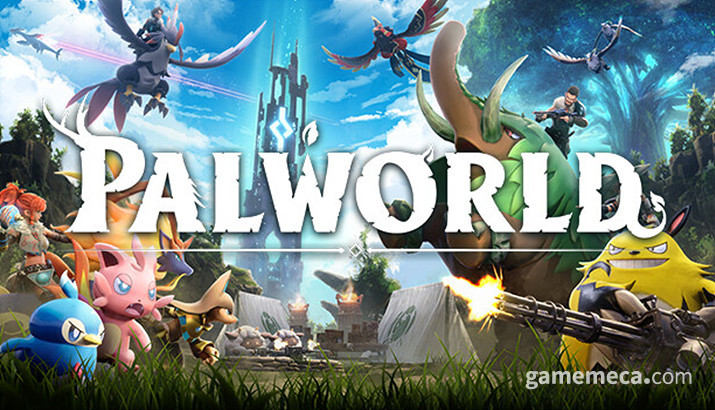

일본 개발사 Pocket Pair가 개발한 액션 어드벤처 생존 게임이다.
이 게임은 '팰'(Pal)로 알려진 신비한 생물로 가득 찬 오픈 월드를 배경으로 한다.
플레이어는 팰과 전투를 벌이고 포획하여 기지 건설, 횡단, 전투에 사용할 수 있다.
팰월드는 홀로 플레이하거나 한 서버에서 최대 32명의 플레이어가 온라인으로 플레이할 수 있다.
2024년 1월에 년에 처음 발표되었으며, Windows, Xbox One, Xbox Series X/S용 얼리 액세스를 통해 출시되었다.